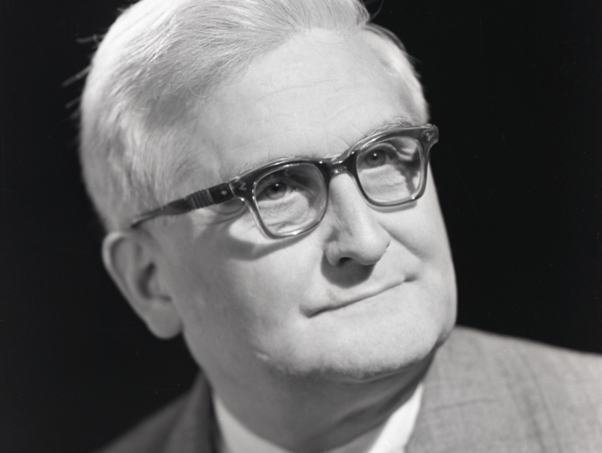

Életrajz

Kalmár László (Edde-Alsóbogátpuszta, 1905. március 27. - Mátraháza, 1976. augusztus 2.) magyar matematikus, az MTA tagja. Kutatási területe: matematikai analízis, matematikai logika és alkalmazásai, különösen a kibernetika, a számítástudomány és a matematikai nyelvészet területén.
A szegedi egyetemen a Kibernetikai Laboratórium, mára már az Informatikai Intézet nevet viseli, s mindenekelőtt Kalmár László nevét: Kalmár László Informatikai Intézet, valamennyi hallgató és egyetemi dolgozó mind a mai napig ott tanulja az informatika alapjait.
| Dátum | Esemény |
|---|---|
| 1905. március 27. | A Somogy megyei Edde községhez tartozó Alsó-Bogát pusztán született |
| 1914-1922 | Középiskolai tanulmányait a budapesti I. kerületi állami főgimnáziumban végzi |
| 1922-1926 | Egyetemi tanulmányait a budapesti tudományegyetem bölcsészettudományi karán végezte, ahol középiskolai tanári oklevelet szerez matematik-fizika szakon. |
| 1927 júniusában | Egyetemi bölcsészdoktori szigorlatot tesz matematikából |
| 1947 márciusában | A szegedi tudományegyetem felsőbb mennyiségtani tanszékére egyetemi tanárrá nevezik ki. |
| 1961 | Az MTA rendes tagjává választják. |
| 1976. augusztus 2. | Mátraházán az Akadémia üdülőjében hunyt el. |
Munkásság
A 20. század utolsó évtizedeiben bekövetkező információrobbanás egyik előfutára és előkészítője volt a matematikai logika és a számítástudomány területén. E területeken kifejtett elméleteinek (játékelmélet, algoritmusok) még a létjogosultságáért is meg kellett küzdenie. 1962-ben életre hívhatta a Kibernetikai Laboratóriumot, amelyben 1964-ben már számítógép működött. Ez a Laboratórium és Kalmár László Számítástudományi Tanszéke képezte alapját a mai Informatikai Tanszékcsoportnak a szegedi egyetemen, ahol programtervező és programozómatematikusok képzése folyik. Kalmár László idejében alkalmazott matematikusok képzéséről beszéltek, de ezt tette Kalmár László már 1957-től kezdve, nála meg lehetett ismerkedni a kibernetika legújabb eredményeivel.
1956-ban a szegedi Bolyai Intézet keretében alakult meg az MTA Matematikai Kutató Intézetének Funkcionálanalízis Osztálya Szőkefalvi-Nagy Béla vezetésével, 1957-től pedig az MTA Matematikai Kutatóintézetének Matematikai Logika és Alkalmazásai csoportja (1958-tól Osztálya) Kalmár László vezetésével. E két kutatási egység 1967. január 1-jétől az MTA Analízis Tanszéki Kutatócsoportjává, illetve azMTA Matematikai Logikai és Automataelméleti Kutatócsoportjává alakult át.
Történetek
A folyosón, amikor találkoztunk Laci bácsival, kicsit felemelte a karját és „Szervusz, kérlek! Hogy vagy, kérlek?” - formulával köszöntött mindenkit. Ez a kérdés nem a hogylétünkre, hanem arra vonatkozott, hogy milyen matematikai problémával foglalkozunk. Az esetek túlnyomó többségében ezekből a kérdésekből intenzív szakmai beszélgetés kezdődött (Tibor)